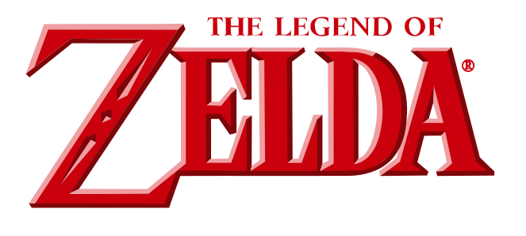

Skip to Photo Credits.
The Legend of Zelda is one of Nintendo’s, as well as history’s most popular and iconic game franchises. The games center on the hero Link, who is the character the player controls and plays as. Along with Princess Zelda, he is destined to save the land of Hyrule from great evil, which is usually caused by the treacherous king of the Gerudo tribe, known as the demon king Ganondorf, and in some cases Ganon. In many games, Link is given the duty of rescuing Princess Zelda from Ganondorf, being obligated to defeat him in the process.
Settings other than Hyrule have appeared in a few games, such as the parallel realm known as Termina, which appears in the game “Majora's Mask”. Other antagonists have appeared as well, for instance the selfish and corrupted Vaati, who serves as a strong villain in the Game Boy Advanced games.
The stories often concern a set of three golden triangles called “The Triforce”. The Triforce is a symbol of the gods’ powers and grants one wish to whoever grants access to it. As a result Ganondorf consistently aims to grasp it's immeasurable power. Characters in each game are often reincarnations with a few exceptions, such as in the game “Phantom Hourglass”, which is a direct sequel to “The Wind Waker”.
The Legend of Zelda games are often exposed to creative methods while undergoing development. This causes the results of each game to be similar to each other, yet contain a few changes which many fans grow to love. An example would be the exposure to items in “A Link Between Worlds”. Ravio; the Lorule counterpart of Link, opens a shop and sells items to him, such as the hookshot, the bow, and the boomerang. This differs from most games in the sense that items are obtained in dungeons during Link’s adventures.
The Legend of Zelda games are known for their puzzles, action and battle gameplay, and the great amount of exploration. These are some of the few aspects that define the series and have stayed constant throughout. More recent games feature stealth as well, where the player must avoid being seen or caught by enemies. There are also side quests which require more exploration than is needed to beat the story, but which often reward the player with items, rupees, or perhaps even enhanced abilities. A few items appear consistently throughout the series, such as the hookshot, which is used to reach higher areas that Link can’t reach by climbing. Other items are unique to a certain game. The Legend of Zelda games provide hack and slash-style combat, rather than strategic or turn-based combat.
Every cannon game contains three main areas: an overworld in which the player can travel in multiple directions, areas to interact and speak with non playable characters (such as Hyrule Castle Town and Kakariko Village), and dungeons containing a wide variety of enemies, items, and mazes. Each dungeon usually has one major item inside and a boss, who is almost always vulnerable to the item the player obtains.